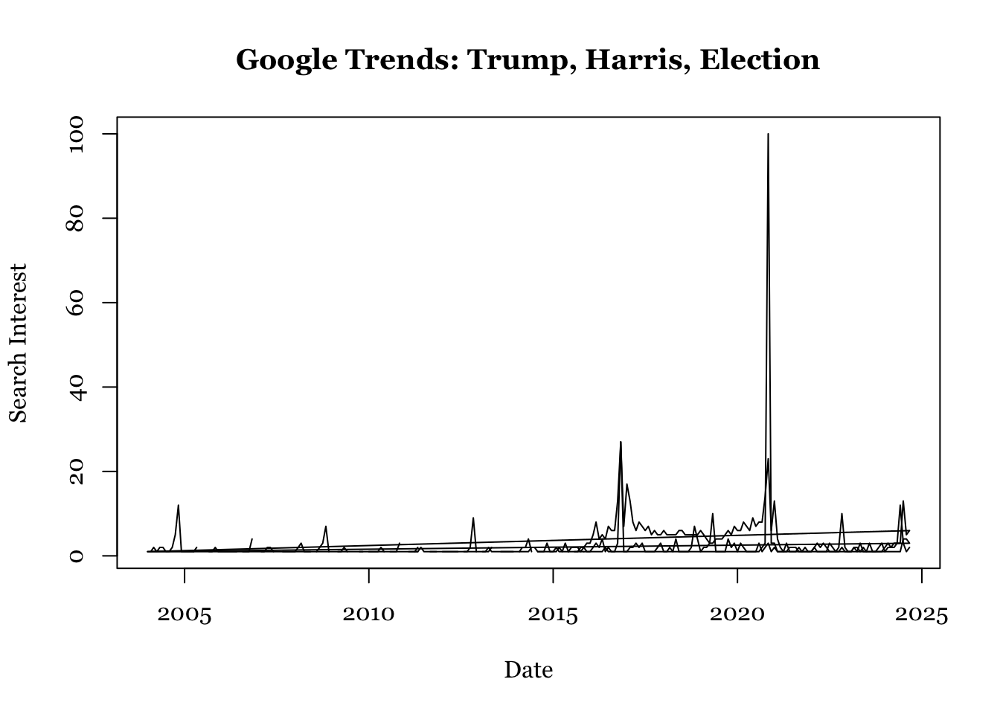

The following objects are masked from 'package:base':
date, intersect, setdiff, union
# Read the CSV file without parsing datestrends_data <-read_csv("multiTimeline.csv", skip =2, col_names =FALSE, col_types =cols(.default ="c"))# Rename columnscolnames(trends_data) <-c("Time", "Trump", "Kamala_Harris", "Election")# Print first few rows to check the dataprint(head(trends_data))
# Convert Time column to proper datetime format# Adjust the format based on your actual datatrends_data$Time <-parse_date_time(trends_data$Time, orders =c("mdy HM", "ymd HM"))
Warning: All formats failed to parse. No formats found.
# Date analysisstart_time <-min(trends_data$Time, na.rm =TRUE)
Warning in min.default(structure(c(NA_real_, NA_real_, NA_real_, NA_real_, : no
non-missing arguments to min; returning Inf
end_time <-max(trends_data$Time, na.rm =TRUE)
Warning in max.default(structure(c(NA_real_, NA_real_, NA_real_, NA_real_, : no
non-missing arguments to max; returning -Inf
time_range <-as.numeric(difftime(end_time, start_time, units ="hours"))# Interval analysisnumber_of_datapoints <-nrow(trends_data)interval <-as.numeric(difftime(trends_data$Time[2], trends_data$Time[1], units ="hours"))# Print resultscat("Date Analysis:\n")
cat("Number of Data Points:", number_of_datapoints, "\n")
Number of Data Points: 182
cat("Interval between data points:", interval, "hours\n")
Interval between data points: NA hours
(2) Use gtrendsR package to collect data
# Load librarylibrary(gtrendsR)# Fetch dataHarrisTrumpElection <-gtrends(keyword =c("Trump", "Harris", "election"), time ="all")# Select data for plottingHarrisTrumpElection_interest <- HarrisTrumpElection$interest_over_timeHarrisTrumpElection_interest <-na.omit(HarrisTrumpElection_interest)# Plot datapar(family="Georgia")plot(HarrisTrumpElection_interest$date, HarrisTrumpElection_interest$hits, type="l",main="Google Trends: Trump, Harris, Election", xlab="Date", ylab="Search Interest")
Warning in xy.coords(x, y, xlabel, ylabel, log): NAs introduced by coercion

# Try another datasetborderimg <-gtrends(keyword =c("border", "immigrant"), time ="all")# Collect data by timeframelast_hour <-gtrends(keyword =c("Harris", "Trump"), time ="now 1-H")last_30_days <-gtrends(keyword =c("Harris", "Trump"), time ="today 1-m")# Collect data by countrytg_gb <-gtrends(keyword =c("immigrants"), geo =c("GB", "US"), time ="all")# Check country codesdata("countries")head(countries)
country_code sub_code name
1 AF <NA> AFGHANISTAN
2 AF AF-BDS BADAKHSHAN
3 AF AF-BDG BADGHIS
4 AF AF-BGL BAGHLAN
5 AF AF-BAL BALKH
6 AF AF-BAM BAMIAN
(3). What are the differences between the two methods?
The Google Trends website offers a user-friendly interface for manual data collection via CSV downloads, making it suitable for casual use, but it has limitations in flexibility, automation, and precision. In contrast, the gtrendsR package in R provides programmatic API access, allowing automated, reproducible data collection with greater flexibility in parameter adjustments and time range specifications. While the website requires additional data cleaning and is less suited for systematic research, gtrendsR delivers data directly as R objects, making it more efficient for thorough data analysis in research projects.